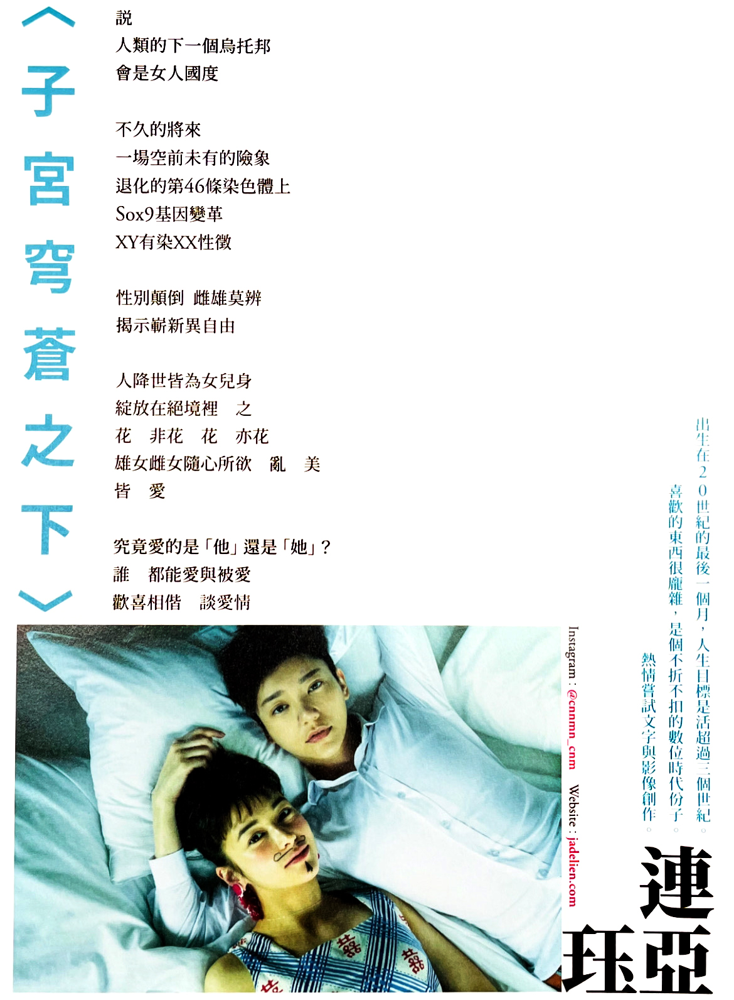

2021魏瑛娟、陳宏一聯手執導長片《揭大歡喜》
宣傳電影刊物新詩創作邀稿
本詩嘗試擴展《揭大歡喜》片中所設定的時空背景，企圖想像與架構出一個全女性烏托邦的可能性。
詩內所提及的Sox9調節基因位於Y染色體性別決定區 (SRY) 上。研究指出，若將Sox9基因的增強子Enh13移除，或者是若Sox9本身發生突變，可能造成性變顛倒的生理現象，使得擁有XY染色體的胚胎發育出雌性性器官。
此外，較X染色體短了半截的Y染色體，經歷世代遺傳仍持續「丟失」基因，逐年「退化」中。研究者預測它們將在數百萬年後從人類的23對基因組中完全消失，XY成了XO，使人不禁開始構想一個需要重新界定現有性別與愛情觀的世界……